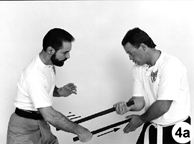

Extracted from a much broader article titled, TRIPLE THREAT — Escrima's Fighting Forms Promise the Utmost in
Baton, Knife and Empty-Hand Versatility! published in Black Belt magazine, March, 2003.
Note: This drill is very basic and is only one of many such drills. More importantly, it is only a drill. Mastering it will go a long way toward improving your self-defense skills, but it will not (repeat, will not) make you an escrimador.
The basic drill consists of five couplets of two-movement actions: an initial defensive action followed by a counterattack. Each couplet follows this pattern, and practiced correctly, enables both players receive equal training time.
|
Couplet Number One
The drill begins with player-B (on the right) advancing with his right foot and attacking with a high right-hand strike that descends vertically toward player-A's head or face (called a 12-line in most Filipino systems). Using this as the starting point, the drill progresses through a series of five couplets or linked pairs. Each couplet begins with an initial defensive action followed by a counterattack.
As player-B advances and attacks with his descending right-hand strike, player-A defends by first stepping back with his right foot as his left hand intercepts B's right arm (close to B's hand). Simultaneously, A's baton (in his right hand) smashes his attacker's right elbow (Photo 1a).
Player-A's baton strikes from left to right as his left hand simultaneously carries B's attacking right arm right to left, thereby increasing the effectiveness of the blow while, at the same time, directing the attacker's weapon away. Player-A ends his defense here with his baton pointed toward his opponent, forward of his face and only a few six inches away from it (Photo 1b).
Player-A now begins his counterattack — a diagonally descending right-to-left strike to the left side of player-B's face (Photo 1c). (What is important here is the line of attack, not the target because the line is easily applied to a variety of targets.) With this counterattack, the first couplet is complete and player-B now gets his turn at defense and counterattack.
|
24" Tapered Hardwood Baton
|
|
Number Two
Using his baton, player-B's initial defense is not a block. Instead, it is a downward smash to the inside of A's right hand or wrist (Photo 2a). This defense is a two-count movement: the strike is the first count, and B's open left hand striking A's weapon-wielding arm (Photo 2b) is the second.
The two-count movement is important here because even if the blow (the first action) is successful, the defender may still retain his baton (albeit with a substantially weakened grip). In that case, a sharp follow-up blow to the injured arm has an excellent chance of dislodging the weapon.
Completing the second couplet, player-B counterattacks with the butt of the weapon to player-A's midsection (Photo 2c). (This blow is often substituted with a horizontal, left-to-right strike to A's abdomen — called a 4-line in Filipino systems.)
|
|
|
Number Three
Player-A's defense against B's last counterattack is a simple one: He simply drops his left arm over his opponent's as he pulls his abdomen back out of harm's away. Simultaneously, player-A smashes counterclockwise from 11 O'clock down to 6 O'clock in a move called an abanico (Photo 3a) against the outside of B's right elbow, forearm, or wrist.
Checking the attack with his left hand might seem a better move; however, such a check requires much greater precision than a fast-moving baton attack allows. Simply extending the left arm over and dropping it onto the attacking arm effectively redirects the opponent's attack. The assailant's weapon arm naturally follows the line of seemingly least resistance (to the defender's midsection); however, with a slight outward movement of his left arm, the defender easily redirects the attack, which is exactly what player-A does.
As Player-A guides B's weapon hand to his left, he brings his baton quickly down against B's head, neck, or collarbone, then blends that line into a withdrawal of his baton (Photos 3b and 3c). Concluding the third couplet is A's counterattack: a thrust to B's torso, as in Photo 3d (a 5-line in Filipino systems).
|

|
|
Number Four
Player-B's response to A's thrust is a left-to-right redirection of A's weapon hand, coupled with a simultaneous right-to-left smash of A's forearm and wrist (Photo 4a). This crossing shear-like action has incredible power potential.
B's counterattack is a quick left-to-right downward diagonal (called a 2-line in Filipino systems) blow to the right side of A's face (Photo 4b). (As was the case in the forehand action shown in Photo 1c, the most important principle here is the line of attack, not the target. Again, because the line of attack is easily followed against a variety of targets.)
|

|
|
Number Five
The final couplet we also call "curls." As player-B makes his downward diagonal strike to the right side of A's head, neck, or collarbone, player-A intercepts B's right arm at or just above B's right elbow and immediately strikes upward from beneath (in an action that looks much like a "curl" in weight-lifting) and against B's rapidly descending right arm (Photos 5a and 5b). (It is important that A's left hand remain forward of his right weapon hand in this maneuver. If they are reversed, A's left hand is highly susceptible to being pinned beneath his right if his right arm is pressed.)
Completing this couplet finishes the drill. From here, player-A advances with his right foot and attacks with a descending right-hand strike to player-B's head, as in Photo 5c. (The same action that player-B first used to start the flow.) As player-A counterattacks, player-B withdraws, stepping back with his right foot and thus beginning his portion of this cyclical drill.
|

|
Conclusion
This drill does not address every possible attack, nor does it teach all possible counters. Moreover, even cursory discussion of other critical elements like angling and footwork has been omitted. It does, however, show you how a variety of effective tactics can be developed very quickly for use against a variety of stick attacks. With just one basic pattern, the student learns defensive tactics against assaults coming at him from a half-dozen common lines of attack. It just doesn't get any easier than that.
|
The following animated view
should pull it all together.
JavaScript slide show freely provided by
Javascript Kit
|
|